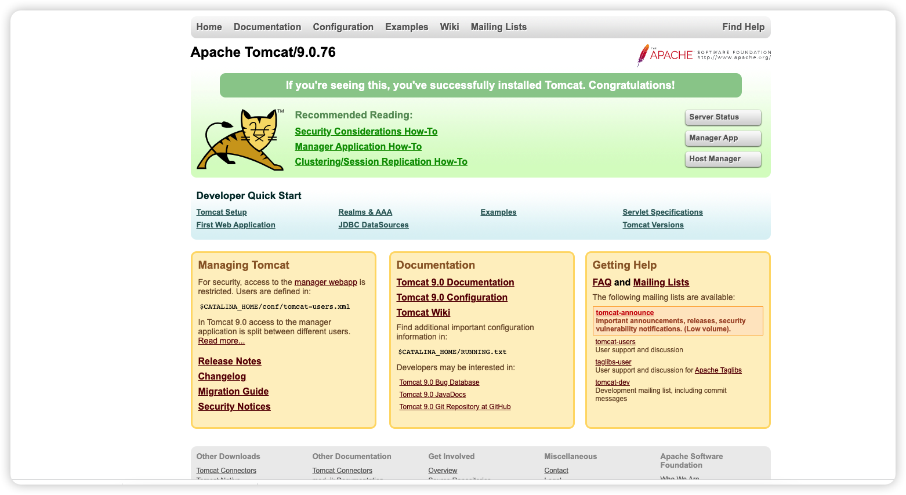
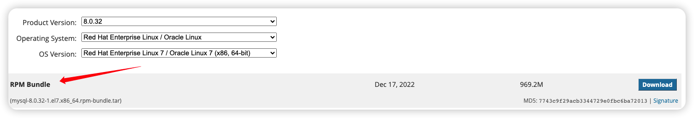
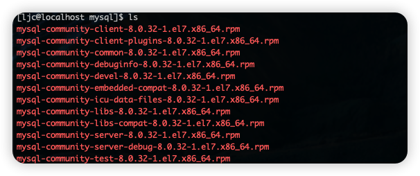
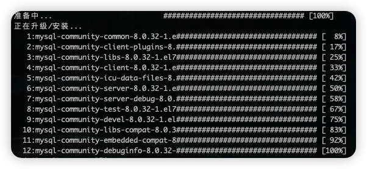
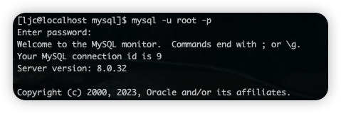
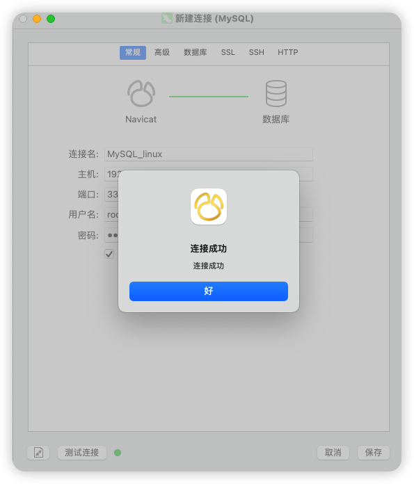

Linux的常见命令和Linux中安装jdk、mysql等。
Linux基础命令
文件目录操作命令
ls-a-l
cd~：表示用户的home目录.：表示当前所在目录..：表示目前目录位置的上级目录
cat-n：显示行号
more：分页的形式显示文件内容回车键：向下滚动一行空格键：向下滚动一屏b：返回上一屏q或者Ctrl+C：退出more
tail：查看文件末尾的内容-f：动态读取文件末尾内容并显示，常用于日志文件的内容输出
mkdir：创建目录-p：可以实现多级目录的同时创建（mkdir 1/2/3）
rmdir：删除空目录
拷贝移动命令
cp：用来复制文件或目录（cp [-r] source dest）-r：复制该目录下的所有子目录和文件
mv：为文件或目录改名，或移动到其他位置（mv source dest）
打包压缩命令
tar：对文件进行打包、解包、压缩、解压包文件后缀名
.tar，表示只是完成了打包，并没有压缩；包文件后缀名.tar.gz表示打包的同时还进行了压缩。-z：代表是gzip，gzip可以对文件压缩或解压；-c：代表是create，创建新的包文件；-x：代表是extract，实现从包文件中还原文件；-v：代表是verbose，显示命令的执行操作；-f：代表是file，用于指定包文件的名称。
1 | tar -cvf fileName # 打包tar文件 |
文本编辑命令
vi/vimvim安装：yum install yum- 命令模式
Ggg
- 插入模式
- 底行模式：
wqq!set nu：显示行号
- 命令模式
查找命令
find：在指定目录下查找文件1
find dirName -name fileName
grep：从指定文件查找指定文本内容1
grep word fileName
远程服务器上传下载
本地向服务器上传
1
2scp /localpath/filename（本地目录文件） username@IP_Address:/remotepath（远程目录）
scp -r /localpath（本地目录） username@IP_Address:/remotepath（远程目录）本地从服务器下载
1
2scp username@IP_Address:/remotepath/filename（远程目录文件） /localpath（本地目录）
scp -r username@IP_Address:/remotepath（远程目录） /localpath（本地目录）
远程服务器设置固定的ip地址：https://www.cnblogs.com/itbsl/p/10998696.html
安装
Linux中安装jdk
建议安装jdk8，jdk17亲测在CentOS中和tomcat不兼容，tomcat安装时无法识别jdk17（我看网上的博主在23年还在linux中使用jdk8的版本，可能CentOS7真的和jdk17有一些兼容上的问题）。
下载jdk8地址：http://www.oracle.com/technetwork/java/javase/downloads/jdk8-downloads-2133151.html
其中别忘记环境变量的配置：
使用vim修改
/etc/profile文件，在文件末尾加入配置：1
2JAVA_HOME=/usr/local/jdk1.8.0_371
PATH=$JAVA_HOME/bin:$PATH重新加载profile文件，使得配置立即生效
1
source /etc/profile
检查jdk是否安装成功：
1 | java -version |
Linux中安装Tomcat
我使用的是Tomcat9版本。
在Tomcat的/bin目录下启动tomcat服务：
1 | sh startup.sh 或者 ./startup.sh |
查看进程检查是否启动成功：
1 | ps -ef | grep tomcat |
通过客户机浏览器可以试着访问服务器的8080端口：
如果无法访问大概率是防火墙关闭了服务器的8080端口，尝试开放8080端口后尝试：
1 | firewall-cmd --zone=public --add-port=8080/tcp --permanent # 开放指定端口 |
停止Tomcat服务：
1 | 方法一 |
Linux中安装MySQL
CentOS7中自带的 Mariadb 和 MySQL 有冲突，先将其卸载：
1 | rpm -qa|grep mariadb |
检查MySQL是否存在，如果存在也卸载重新安装：
1 | rpm -qa | grep mysql |
下载MySQL地址：https://downloads.mysql.com/archives/community/?spm=a2c6h.12873639.article-detail.5.51fa3861DJz2jH

将mysql-8.0.32-1.el7.x86_64.rpm-bundle.tar上传至服务器：
1 | scp /localpath/mysql-8.0.32-1.el7.x86_64.rpm-bundle.tar username@IP_Address:/remotepath/mysql |
将tar解压到指定目录：
1 | sudo tar -xvf /home/ljc/mysql/mysql-8.0.32-1.el7.x86_64.rpm-bundle.tar -C /usr/local/mysql |

不考虑依赖关系的强制安装命令：
1 | rpm -ivh *.rpm --nodeps --force |

安装成功后，启动MySQL服务：
1 | systemctl start mysqld |
进入MySQL：
1 | mysql -u root -p |
MySQL的默认临时密码在安装时的日志文件中，复制过来登录：
1 | sudo grep 'temporary password' /var/log/mysqld.log |

降低密码的校验等级和校验规则：
1 | set global validate_password.policy=0; |
重新设置MySQL密码：
1 | alter user 'root'@'localhost' identified by 'password'; |
localhost只能用户本机127.0.0.1访问，创建一个新root用户用于远程登录访问：
1 | create user 'root'@'%' identified with mysql_native_password by '12345678'; |
给新root用户分配权限：
1 | grant all on *.* to 'root'@'%'; |
在NaviCat上远程连接服务器上的MySQL：
这里如果连接失败是CentOS防火墙没有开启3306端口，建议关闭防火墙。
1 | systemctl status firewalld.service |
关闭防火墙：
1 | systemctl stop firewalld.service |
永久关闭防火墙：
1 | systemctl disable firewalld.service |